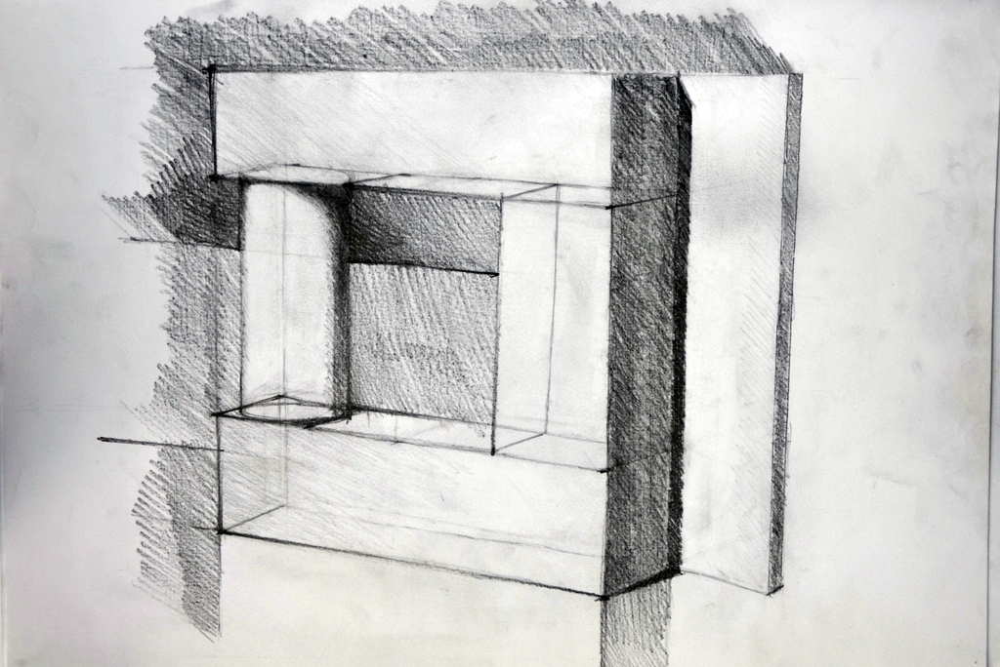
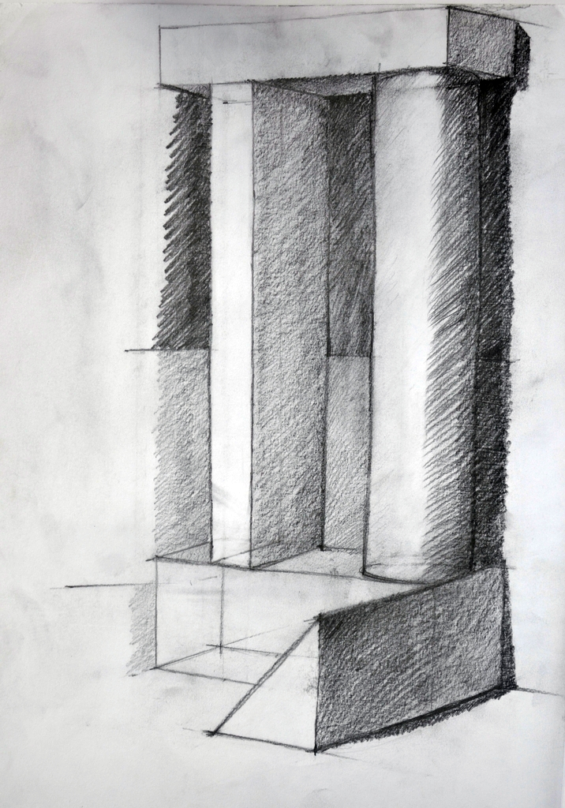
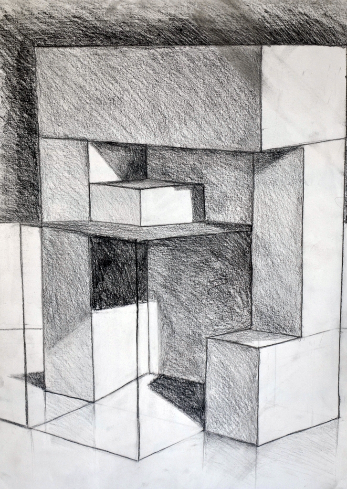

1.
képcsoport
A rajzi előkészítő tanfolyam fontos célja volt a térlátás és a térábrázolás
kialakítása, fejlesztése. Bár alapszinten már középiskolában megismerkedtem
ezekkel, de a pontosságon a finom kidolgozáson még nagyon sok javítanivalóm
volt.
Ebbe a csoportba azokat a rajzaimat válogattam bele, melyek az első pár rajzi
előkészítő foglalkozáson készültek, és a legegyszerűbb testek láthatók rajtuk.
Jól kivehető, hogy vonalvezetésem itt még nem pontos, sokszor görbék a
vonalak. A testek árnyékolása hirtelen záródik, nem finom a rasztelezés.


